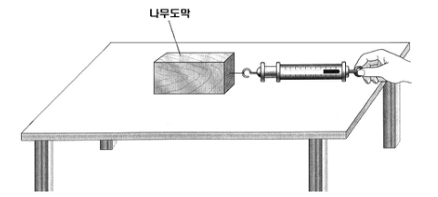

접촉 면적과 최대 정지 마찰력 실험 — 과학적 태도 점검표와 학생 B를 위한 추가 실험Contact area and maximum static friction · checklist for scientific attitude and a follow-up experiment
다음은 접촉 면적에 따른 마찰력을 알아보기 위한 실험(그림 참조)에서 학생들이 얻은 자료와 내린 결론이다. (4점)

· 접촉 면적에 따른 최대 정지마찰력 (단위: N)
| 접촉 면적(cm²) | 1회 | 2회 | 3회 | 4회 | 5회 | 평균 |
|---|---|---|---|---|---|---|
| 100 | 3.5 | 3.2 | 3.1 | 3.5 | 3.3 | 3.32 |
| 200 | 3.4 | 3.3 | 3.2 | 3.6 | 3.2 | 3.34 |
| 400 | 3.5 | 3.3 | 3.6 | 3.5 | 3.3 | 3.44 |
· 학생들이 내린 결론
학생 A : 접촉 면적이 커질수록 최대 정지마찰력이 커진다는 것을 알 수 있다.
학생 B : 별 차이가 없는 것 같지만 추가 실험을 더 해 봐야 할 것 같다.
위 자료를 활용하여 결론을 도출하는 학생들을 관찰하여 과학적 태도를 평가하려고 다음과 같은 점검표를 만들었다.
| 평가 항목 | 평가 결과 |
|---|---|
| 1. 평균값의 차이가 의미있는 크기인지 따져 보는가? | 예 ( ) 아니오 ( ) |
| 2. 이론값과 다르게 나왔을 때 책이나 자료를 찾아보는가? | 예 ( ) 아니오 ( ) |
위 점검표를 통하여 평가하고자 하는 과학적 태도 요소를 제7차 과학과 교육과정 해설에 근거하여 쓰고, 학생 B가 추가로 해 볼 수 있는 실험을 고안하여 제시하시오.
위 점검표를 통하여 평가하고자 하는 과학적 태도 요소를 제7차 과학과 교육과정 해설에 근거하여 쓰시오.
학생 B가 추가로 해 볼 수 있는 실험을 고안하여 제시하시오.
정답모범 답안 요약
| 문항 | 모범 답안 (요약) | 검증 |
|---|---|---|
| 태도 요소 | 비판성(비판적 태도) — 실험 결과(평균의 작은 차이)나 주장을 그대로 받아들이지 않고 측정의 흩어짐·이론·문헌 자료에 비추어 그 타당성을 따져 보는 태도 | 공식 정답 미공개 — 점검표 두 항목의 공통 행동 특성으로 판단(대안은 검토 의견), 표의 통계 검정은 모의실험 |
| 추가 실험 | 같은 나무도막 2개를 포개어 놓을 때(접촉 면적 S)와 나란히 놓을 때(접촉 면적 2S)의 최대 정지 마찰력을 같은 방법으로 여러 번(10회 이상) 측정해 비교한다 — 수직항력(무게)과 접촉면의 재질은 같게 하고 접촉 면적만 바꾸며, 평균의 차이를 측정값의 흩어짐(표준편차)과 비교한다. (보강: 같은 면적에서 추를 올려 수직항력의 효과와 비교) | 모의실험: 면적만 바꾼 모의 측정에서 평균 차이가 표준오차 수준 — 수직항력을 바꾸면 뚜렷한 차이 |
1소문항별 풀이 (AI 모범 답안)
태도 요소 2점
위 점검표를 통하여 평가하고자 하는 과학적 태도 요소를 제7차 과학과 교육과정 해설에 근거하여 쓰시오.
1점검표 항목 분석
| 항목 | 드러나는 행동 |
|---|---|
| 1. 평균값의 차이가 의미 있는 크기인지 따져 봄 | 자료(측정값의 흩어짐)에 비추어 결론의 타당성을 검토 — 성급한 일반화를 경계 |
| 2. 이론값과 다르면 책·자료를 찾아봄 | 자신의 결과와 기존 지식을 비교·검토하여 판단 — 무비판적 수용이나 무조건적 거부를 피함 |
두 항목은 모두 결과나 주장을 그대로 받아들이지 않고 증거에 근거하여 따져 보는 태도, 곧 비판성을 평가한다.
2자료로 확인 — 차이는 의미 있는가?
각 면적의 표준편차는 약 0.13~0.18 N, 평균의 표준오차는 약 0.07 N. 100 cm²와 400 cm²의 평균 차 0.12 N에 대한 \(t\approx1.2\) (자유도 8의 임계값 2.31보다 작음), 세 집단 분산 분석 \(F\approx0.79\), \(p\approx0.47\) → 의미 있는 차이가 아니다. 학생 A의 결론은 근거가 부족하고, 학생 B의 판단 유보가 더 과학적이다.
‘호기심’, ‘끈기성’처럼 점검표 행동과 직접 관련 없는 요소를 쓰거나, 태도가 아닌 탐구 기능(‘자료 해석’)으로 답하는 경우.
추가 실험 2점
학생 B가 추가로 해 볼 수 있는 실험을 고안하여 제시하시오.
1실험 설계
- 똑같은 나무도막 2개(같은 면, 같은 표면 상태)를 준비한다.
- (가) 두 도막을 위아래로 포개어 놓고(접촉 면적 S) 용수철저울(또는 힘 센서)로 천천히 일정하게 당겨 움직이기 직전의 힘을 잰다.
- (나) 두 도막을 옆으로 나란히 붙여 놓고(접촉 면적 2S, 무게는 같음) 같은 방법으로 잰다.
- 각각 10회 이상 측정하여 평균과 표준편차를 구하고, 평균의 차이가 흩어짐보다 큰지 비교한다.
2통제 변인과 보강
통제 변인: 수직항력(전체 무게), 접촉면의 재질·상태, 당기는 속도와 방향, 같은 책상 위치. 보강 실험으로 같은 면적에서 도막 위에 추를 올려 수직항력을 바꾸면 마찰력이 뚜렷이 커지는 것을 함께 보여 주면, 면적의 영향이 상대적으로 무시할 만함을 확인할 수 있다.
무게가 다른 도막을 써서 면적과 수직항력을 함께 바꾸거나, 같은 실험을 그대로 몇 번 더 하자는 답(설계 개선이 없음).
2채점 기준 (예시)
공식 채점 기준은 공개되지 않는다. 배점과 답안 요소를 바탕으로 만든 예시 채점 기준이다.
| 문항 | 배점 | 채점 요소 (예시 답안의 핵심 표현) |
|---|---|---|
| 태도 요소 | 1 | 태도 요소로 ‘비판성’을 제시 |
| 태도 요소 | 1 | 근거: 결과·주장을 증거(오차 크기, 이론·자료)에 비추어 검토하는 태도임을 설명 |
| 추가 실험 | 1 | 접촉 면적만 바꾸고 수직항력·접촉면 재질 등을 통제한 실험 설계 |
| 추가 실험 | 1 | 반복 측정과 결과 비교(평균·흩어짐) 방법 제시 |
| 합계 4점 | ||
3출제 의도·검토
출제 의도
- 과학적 태도 요소를 구체적 관찰 행동(점검표 항목)과 연결할 수 있는가.
- 자료의 변이를 고려해 결론의 타당성을 판단하고, 변인을 통제한 추가 실험을 설계할 수 있는가.
검토 의견
43D 모의실험 — 접촉 면적을 바꾸며 최대 정지 마찰력 재기 (Space 재생/정지 · R 처음으로 · F 전체화면)
5고등학생 지도 — 고교 교육과정과 잇기
고교 교육과정과의 연결
- 고교 물리 ‘힘과 운동’ — 정지 마찰력과 운동 마찰력, \(f=\mu N\)
- 탐구 활동에서 측정값의 평균·흩어짐으로 결론의 신뢰성 판단
고등학생용 변형 문항
- 같은 벽돌을 눕혀 놓을 때와 세워 놓을 때 밀기 시작하는 데 필요한 힘은? (거의 같다)
- 측정값이 3.3, 3.4처럼 0.1 N 차이 나면 ‘다르다’고 할 수 있을까? 무엇을 더 알아야 하는가? (측정값의 흩어짐)
- 접촉 면적만의 효과를 알아보려면 무엇을 같게 해야 하는가? (무게, 접촉면의 재질, 당기는 방법)
6수업 활용 안내
수업 흐름 (45분)
- 자료 해석 (10분) — 표에서 평균과 흩어짐 비교, 학생 A·B 결론 토론
- 태도 평가 (8분) — 점검표 항목이 겨냥하는 태도(비판성) 논의
- 추가 실험 설계 (12분) — 포개기/나란히 놓기, 통제 변인 정하기
- 실험·모의실험 (15분) — 측정 횟수와 결론의 신뢰도 확인
자주 나오는 오개념
- “넓을수록 마찰력이 크다” → 최대 정지 마찰력은 면적과 거의 무관, 수직항력에 비례
- “평균이 다르면 차이가 있다” → 흩어짐보다 작은 차이는 의미 없음
- “이론과 다르면 실험이 틀렸다” → 자료를 찾아보고 원인을 따지는 것이 비판적 태도
평가 포인트
- 태도 요소를 점검표 행동과 연결해 쓰는가
- 추가 실험에서 면적 외 변인을 통제하는가
- 반복 측정과 비교 기준(흩어짐)을 제시하는가
실험 연결
힘 센서(MBL)로 당기는 힘–시간 그래프를 얻어 최대 정지 마찰력을 정밀하게 재고, 면적·수직항력별로 20회 이상 측정해 통계적으로 비교한다.